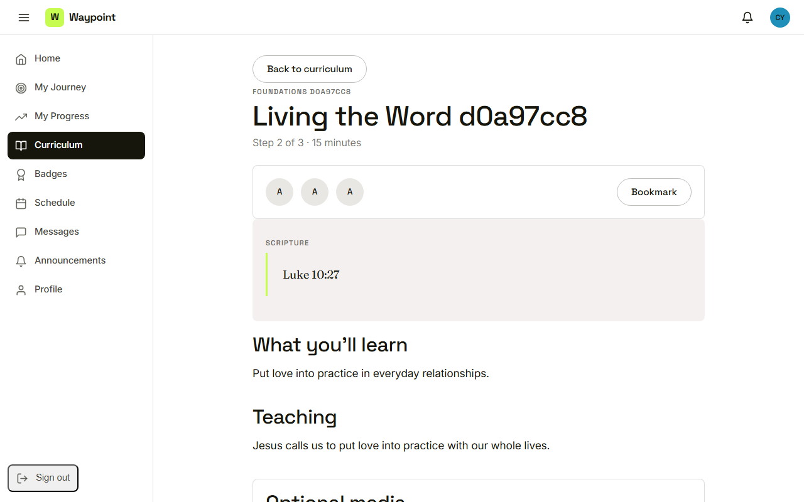
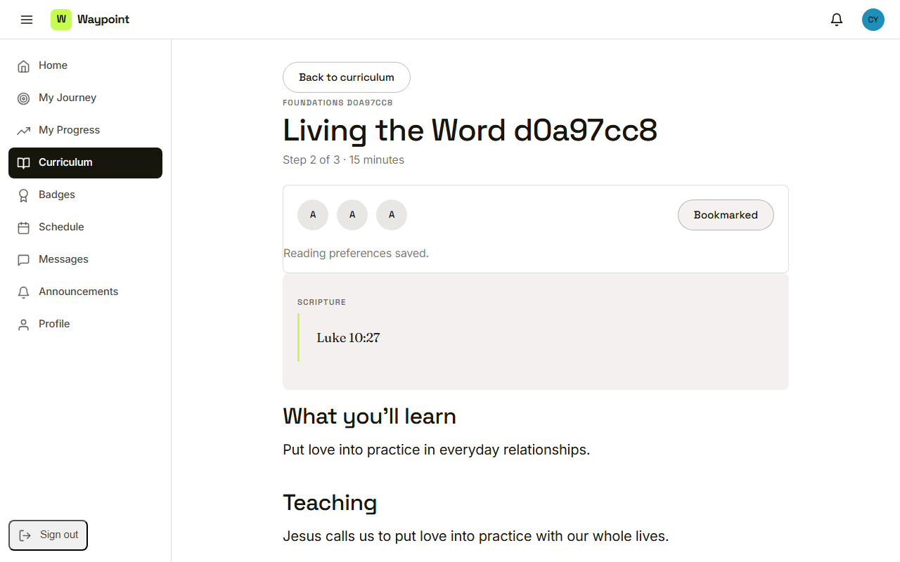
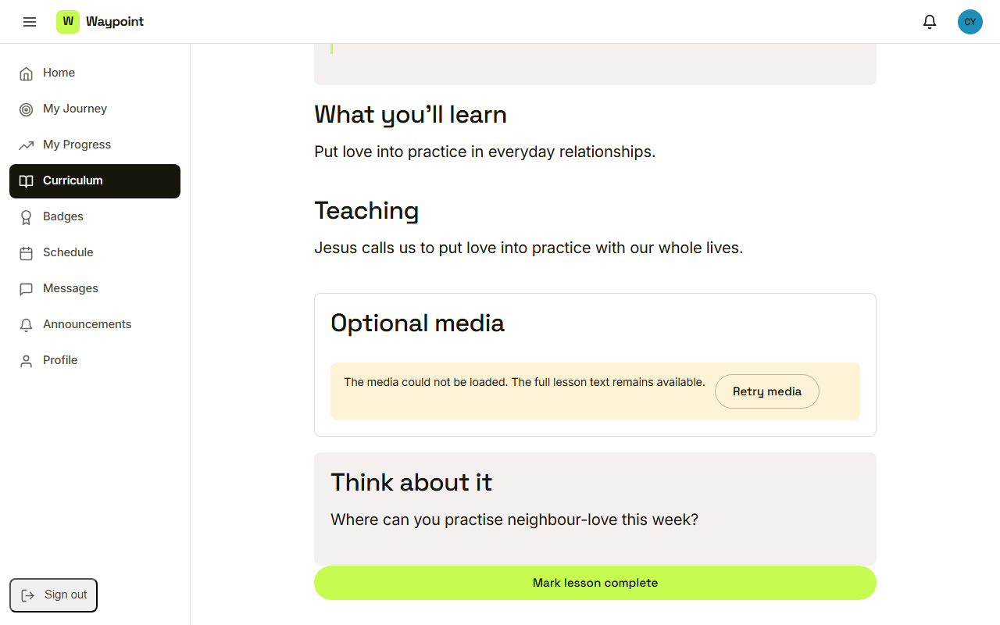
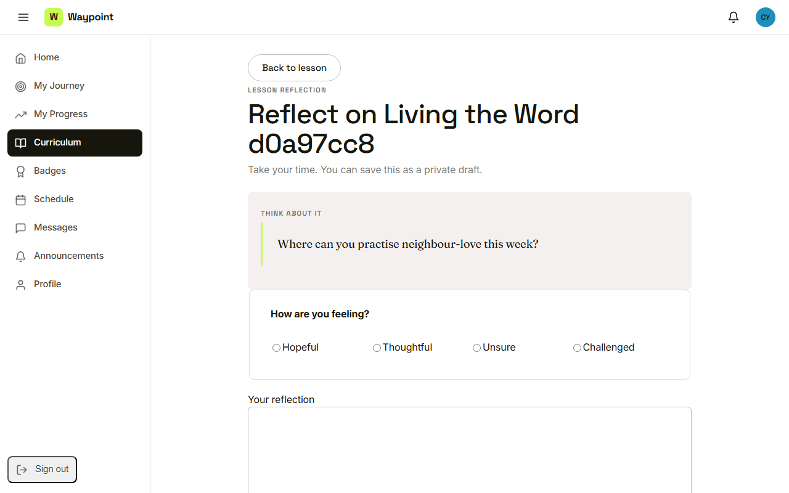

Waypoint · Video 034
Reading and completing a lesson
Scripture, teaching, and a prompt to reflect
Scripture and teaching

Step two of three, fifteen minutes
Text size and bookmark

Reading preferences saved
The lesson still works

Retry media, text stays readable
On to the reflection

Completing leads straight here
Things to remember
No leader notes are ever shown to youth
Text size and bookmark are remembered
If media fails, the text works and she can retry
Marking complete unlocks what is next